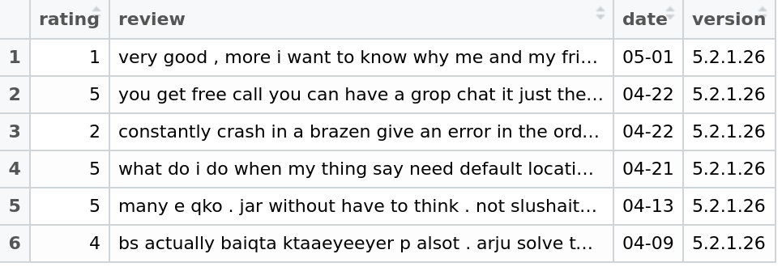
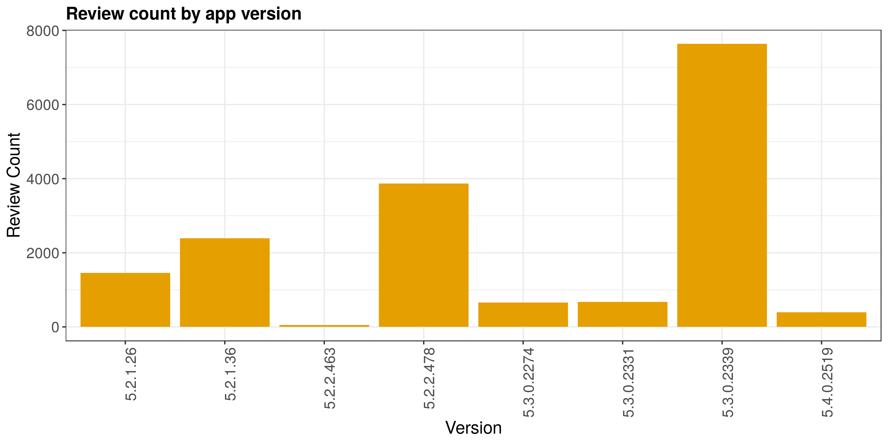
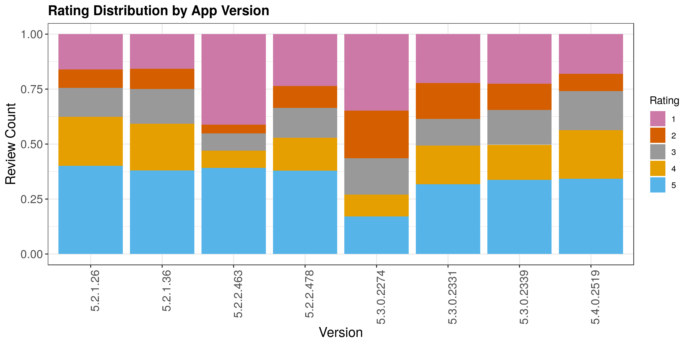
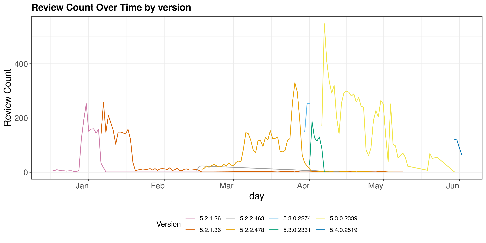
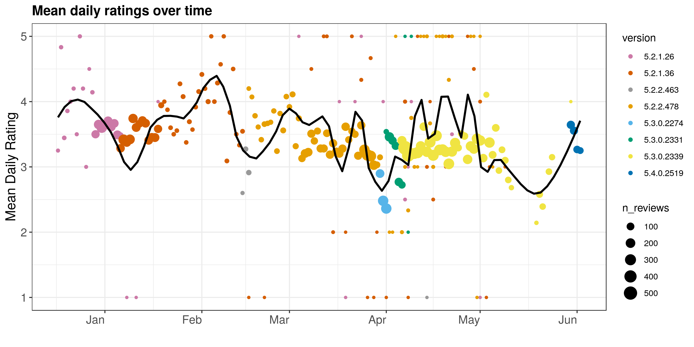

Yubo Zhang
Data Scientist
abc
The proliferation of smartphones attracts more and more software developers to devote to building mobile applications (“apps”). As the market competition is becoming more intense, in order to seize the initiative, developers tend to employ an iterative process to develop, test, and improve apps. Therefore, timely and constructive feedback from users becomes extremely crucial for developers to fix bugs, implement new features, and improve user experience agilely.
App reviews have rich content, and can provide developers with feedback on the app’s performance, almost in real time. However, manual analysis of reviews is time consuming, and this includes lots of noise, short texts length.
Some previous products focus on identifying users’ major concerns or preferences from app reviews. However, the issues are neither identified automatically nor studied online. There also exists some product focusing on analyzing the parts of apps that are loved by users. Different from previous efforts, our work aims to detect the emerging issues automatically and dynamically. Moreover, we present app issues in an interactive and comprehensible manner.
Review count by app version
Our dataset contains user reviews on Google Play for Viber has 8 distinct app versions and some have more reviews than others. This is likely due to the time period when this data was pulled. For example, if the data was pulled when version 5.3.0.2339 was in production, this version will have the most number of users, hence the most number of reviews.
Therefore, it makes sense to look at the rating distribution for each version by percentage rather than by count.
Rating distribution by app version
From distribution of ratings as displayed in the stacked bar chart below, it is clear that some versions are better than others. If rating 4 and 5 are considered as “good” and the rest as “bad”, we can see that Viber went through a “rocky” release of version 5.3.0, when good ratings were only about 26%, with the rest being bad ratings. This is a major dip from version 5.2.0. However, with the next update (version 5.3.0.2331), issues could have been fixed, resulting in much better ratings for the app.
Besides, version 5.2.2.463 also seems to be a ‘buggy’ version with almost 40% of one-star ratings.
Review count over time by app version
Recall that version 5.2.2.463 and 5.3.0.2274 were ‘problematic’ versions with major dips in star ratings. With the review count over time chart, we could see that, fortunately, these version were fixed quickly, within days, with the newly updated versions that followed.
Viber seems to have a new major release every quarter, and small updates in between. For example, during the first half of the year in our dataset, we observed two major app releases, version 5.2.0 in January and version 5.3.0 in April.
For almost all app versions, we observed a spike in reviews right after the release of the new version. This volume spike in user reviews also presented a good opportunity.
Review count over time by app version
Finally, we examined Viber’s mean daily ratings over time. Once again, it was clear that there were major dips in user satisfaction when version 5.2.2.463 (grey) and 5.3.0.2274 (blue) were released, but the app managed to recover with new updates.
The key question for developers would be, how can issues be identified quickly from user reviews so that they can be fixed before the issues are more widespread?
Placeholder Placeholder Placeholder Placeholder Placeholder Placeholder Placeholder Placeholder Placeholder Placeholder Placeholder Placeholder Placeholder Placeholder Placeholder Placeholder Placeholder Placeholder
LDA
Latent Dirichlet allocation is a generative probabilistic model of a collection of composites made up of parts. In terms of topic modeling, the composites are documents and the parts are words and/or phrases. LDA is an unsupervised machine learning method that helps us discover hidden semantic structures, allows us to learn topic representations.
UMAP
Uniform Manifold Approximation and Projection (UMAP) is a dimension reduction technique that can be used for visualisation. similar with t-SNE.
Placeholder Placeholder Placeholder Placeholder Placeholder Placeholder Placeholder Placeholder Placeholder Placeholder Placeholder Placeholder Placeholder Placeholder Placeholder Placeholder
Data Scientist
abc
Data Scientist
Placeholder
Data Scientist
Placeholder